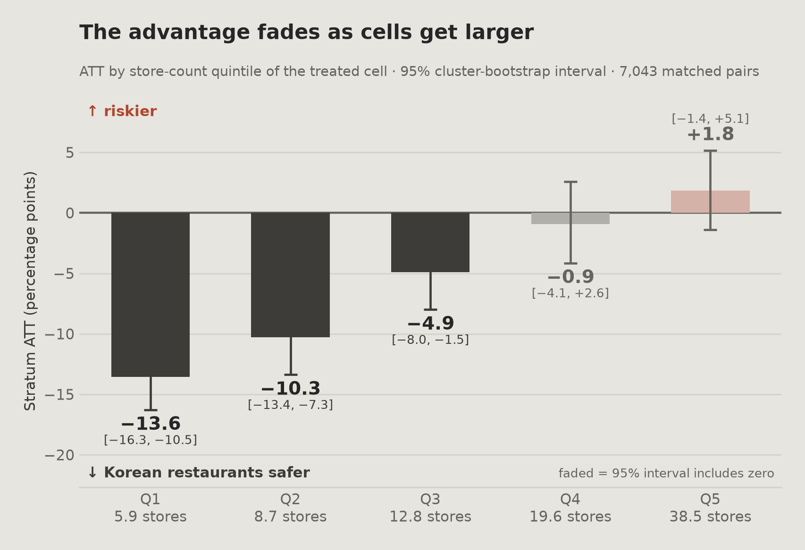
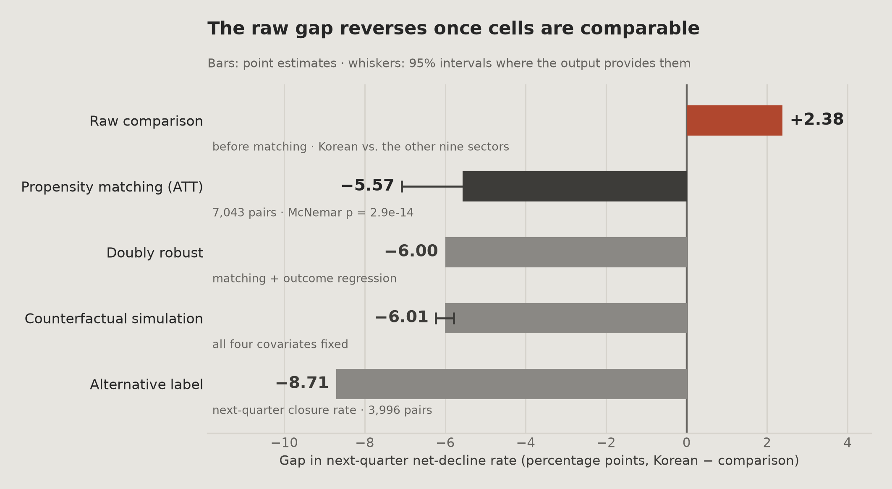
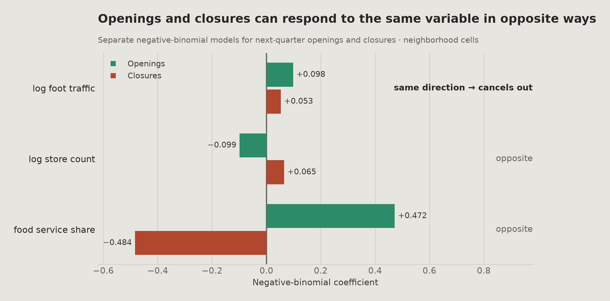
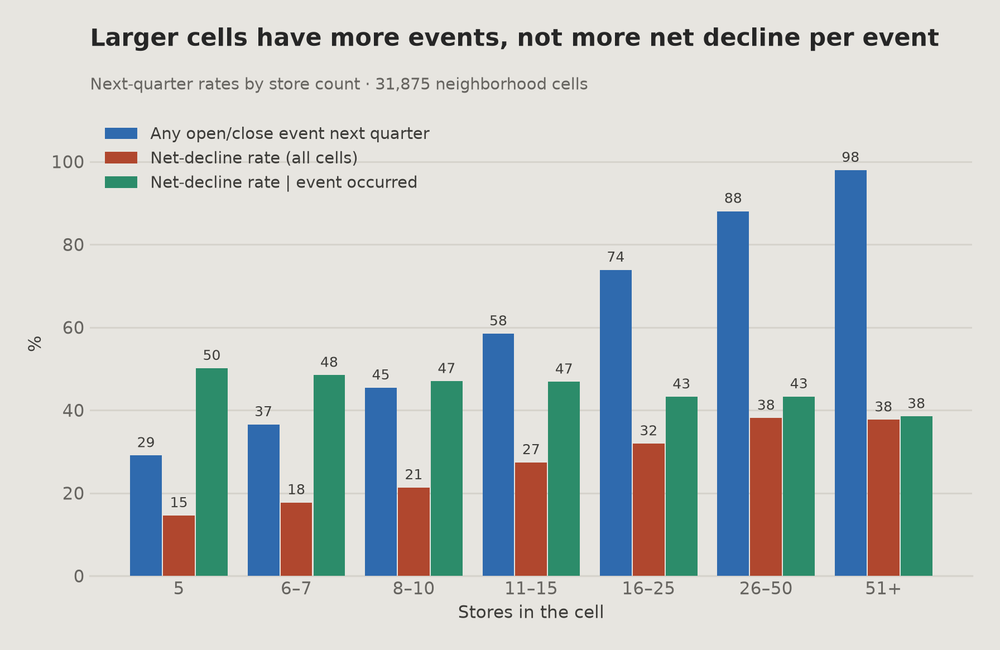
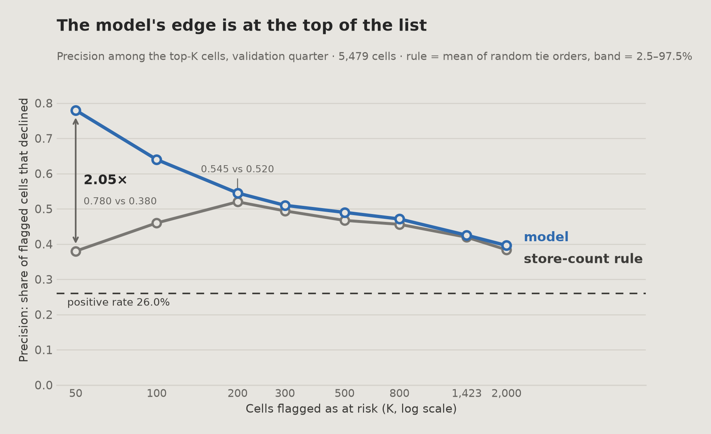
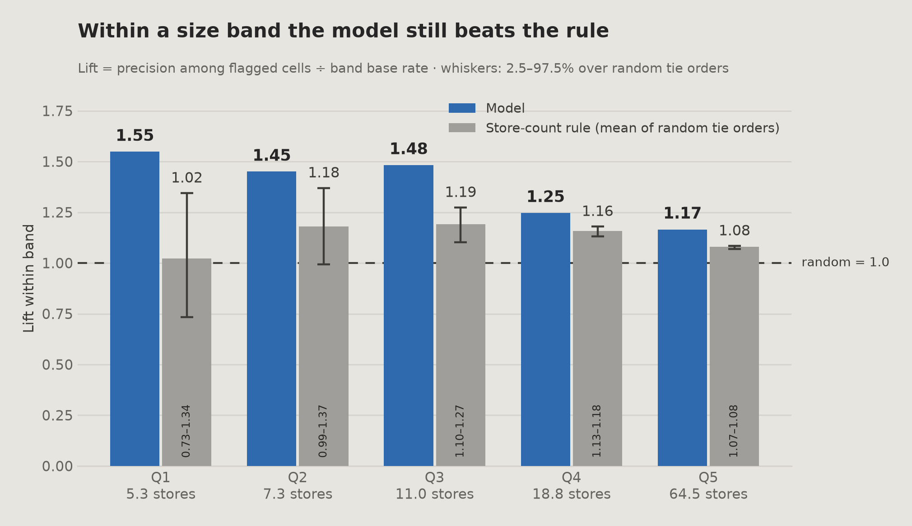
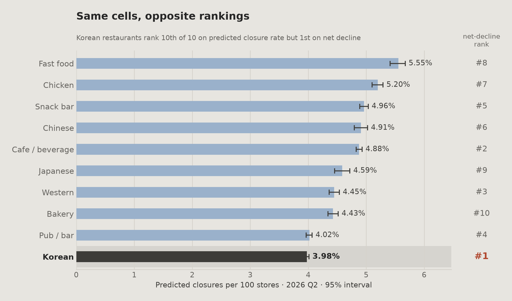

00
요약
프로젝트와 주요 결과 요약
지원이 순감소 순위를 따른다면, 그 순위는 폐업 위험보다 점포 수와 더 밀접합니다. 골목상권 전체에서 1위인 업종은 규모로 매칭하면 비교 가능한 칸보다 순감소율이 낮지만, 모든 규모에서 그런 것은 아닙니다.
단순 비교. 골목상권에서 12개 분기를 합치면 한식의 순감소율이 25.3%로 가장 높고, 나머지 9개 외식 업종은 22.9%입니다(분기별로 보면 12개 중 3개 분기에서만 1위). 이런 순위로 지원을 배분한다면 이 정도 격차가 컨설팅이나 긴급 대출 같은 지원을 누가 받는지에 영향을 줄 수 있습니다. 이는 가정한 사용 사례입니다. 순감소는 이 프로젝트의 자체 라벨이며, 이 페이지는 어떤 기관이 실제로 이렇게 지원을 배분한다고 가정하지 않습니다.
단순 격차에 대한 검정
| 검정 | 결과 | 의미 |
|---|---|---|
| 순열 검정 · 1,000회 섞기 | p = 0.344 | 1위 업종이 10개 업종 평균보다 앞선 정도는 +1.70 pp이고, 10개 중 최댓값을 고르는 것만으로도 평균 +1.49 pp가 나옵니다. 그래서 그 우위의 88%는 최댓값을 고른 것만으로 생기는 양입니다 |
| 성향점수 매칭 · 7,043쌍 | −5.57 pp | 비교 가능한 칸끼리 매칭하면 차이의 부호가 뒤집힙니다 |
| Woolf 동질성 검정 | p < .0001 | 매칭 평균은 규모 구간마다 다른 추정치를 합친 값입니다. 가장 작은 세 구간에서는 뚜렷하게 음수이고, 가장 큰 두 구간에서는 구간이 0을 포함합니다 |

주요 결과
모형이 보여 주는 역전은 거의 전부 점포 수 하나로 설명됩니다(공변량 4개를 모두 고정하면 −6.01 pp, 점포 수만 고정하면 −5.84 pp). 점포 수와 다른 공변량을 고정하면 유동인구는 순감소와 유의한 연관이 없습니다(AME +0.72 pp, p = 0.078. 점포 수를 빼면 강하게 유의: 유동인구만 넣으면 AME +3.97 pp, 면적과 집객시설을 더하면 +2.66 pp, 둘 다 p < 0.0001). 유동인구는 개업 그리고 폐업이 많은 것과 연관되므로 둘을 빼면 대부분 상쇄됩니다. 데이터는 붐비는 상권이 안전하다고 보여 주지 않으며, 이 패턴은 더 빠른 회전과 맞습니다.
라벨은 정확히 분해됩니다. 순감소 = 이벤트 발생 × 그 이벤트가 순감소로 끝남. 점포 수는 첫 번째 항과 강하게 연관되고 두 번째 항에서는 계수가 작고 유의하지 않으므로, 라벨은 주로 이벤트가 일어난 뒤 증감의 방향이 아니라 개업이나 폐업이 얼마나 자주 일어나는지를 반영합니다.
서울시 상권변화지표의 HL 등급(원본 파일의 등급명: '상권축소')은 검증한 한 분기에서 다음 분기 순감소에 대한 lift가 0.937입니다. 이 지표는 각 상권을 생존 사업체와 폐업 사업체의 평균 영업 개월 수를 서울 평균과 비교해 HH/HL/LH/LL로 매기며, HL은 생존 사업체 평균이 서울보다 높고 폐업 사업체 평균은 낮다는 뜻입니다. lift가 1보다 작다는 것은 HL 칸의 순감소율이 평균 칸보다 약간 낮았다는 뜻입니다(24.3% vs 26.0%). 이는 등급 하나를 이 프로젝트의 자체 라벨로 시험한 것이고 지표의 공표 목적이 아니므로, 지표의 다른 용도에 대해서는 말해 주지 않습니다.
모델의 장점은 전체 지표보다 운영 지점에서 나타납니다. 검증 분기에서 상위 50의 정밀도는 점포 수 규칙의 0.380에 비해 0.780이고, 두 목록은 4%만 겹칩니다. 즉 지목한 50칸 중 48칸은 점포 수 규칙 목록에 없는 칸입니다.
성능 근거로 보고하지 않는 결과가 하나 있습니다: 폐업 수 모델의 업종 순위 상관 0.915인데, 검증 분기 하나의 업종 10개에 기댄 값입니다. 순감소 라벨의 단일 분기 순위도 잡음이 컸습니다(방법론 장의 점검 참고).
권고
업종 순위 대신 칸 단위 점수
순감소를 취약성의 단독 지표로 쓰지 않아야 합니다. 점포당 폐업 수를 옆에 함께 보여 줄 수 있습니다. 위험도로 지원을 배분한다면, 이 분석은 업종 단위 순위보다 골목상권 하나 × 외식 업종 하나 단위의 점수를 더 잘 뒷받침합니다.
한눈에 보기
01
개요
분석 범위와 중요한 이유
서울시 상권분석서비스는 분기 표에 모든 상권 × 외식 업종의 개업·폐업 수를 공개하고, 별도로 상권변화지표(HH/HL/LH/LL, 생존·폐업 사업체의 영업 개월 수를 서울 평균과 비교한 상권별 등급, 06장 참고)를 냅니다. 순감소 플래그는 공개하지 않습니다. 이 프로젝트는 칸의 다음 분기 순감소를 폐업이 개업보다 많은 경우로 정의합니다. 아래 사용 사례는 가정입니다: 구청 담당자가 컨설팅과 긴급 대출을 어디에 줄지 정할 때 이 플래그로 외식 업종을 줄 세운다면, 그 순위는 아래에서 시험한 성질을 갖게 됩니다. 이 페이지는 어떤 기관이 실제로 이렇게 지원을 배분한다고 주장하지 않습니다.
이 프로젝트는 그런 순위가 폐업 위험을 반영하는지 아니면 주로 점포 수를 반영하는지를 서울 상권 데이터 13개 분기(라벨 12개), 상권 유형 4개 전체의 칸 67,475개, 외식 업종 10개로, 성향점수 매칭, 회귀, 예측 방법을 써서 살펴봅니다.
팀 프로젝트입니다. 이 페이지는 제가 맡은 가설 H2, 두 번째 보조 질문, 그리고 연결된 예측과 운영 평가를 다룹니다. 프로젝트의 주 질문과 H1은 다른 팀원이 맡았고 이 페이지 범위 밖입니다.
분석 단위
칸은 상권 하나 × 외식 업종 하나 × 분기 하나입니다. 따로 적지 않으면 이 페이지의 모든 값은 이 단위로 쟀습니다.
비슷한 두 단어
상권은 상권 경계 표의 상권 하나입니다(1,650개). 자치구는 서울의 25개 구 가운데 하나입니다. 둘은 서로 바꿔 쓸 수 없고, 그 차이가 권고에 중요합니다.
중요한 이유. 격차가 규모 교란에서 나온다면 업종 단위 배분은 규모를 조건으로 한 칸 단위 배분으로 바꾸는 편이 낫습니다. 그렇지 않다면 업종 단위 순위도 여전히 합리적입니다.
02
비즈니스 질문
가정한 사용 사례와 연구 질문
골목상권 합산 순감소율에서 한식이 1위입니다(분기별로 보면 12개 중 3개 분기에서 1위). 이 순위는 서울시의 개업·폐업 수로 이 프로젝트에서 계산한 것입니다. 한식은 골목상권에서 가장 큰 업종이기도 해서 칸당 평균 점포 21.3개이고 나머지 9개는 10.3개입니다. 큰 칸일수록 개업·폐업 이벤트가 많고, 이벤트가 많을수록 폐업이 개업을 넘을 기회도 많습니다.
주 질문
상업 규모와 유동인구를 통제하면 한식과 다른 외식 업종 사이의 순감소 위험 차이가 달라지는가?
분석 전에 세운 가설: 이 두 변수로 매칭하면 격차가 줄어들 것이다.
보조 질문
매출, 유동인구, 점포 밀도 가운데 어떤 상권 특성이 다음 분기 순감소와 연관되는가?
점포 수와 다른 공변량을 통제하면 유동인구는 순감소와 유의한 연관이 없습니다(AME +0.72 pp, p = 0.078). 그 통제가 없으면 유의합니다.
단위
칸
칸 (상권 유형 4개 전체)
67,475
라벨 분기
12
양성 비율
25.5%
03
데이터
출처, 표본 구성, 데이터 수정
출처
서울 열린데이터광장 · 서울시 상권분석서비스 표(제공: 서울신용보증재단, 이용허락: 공공누리 제1유형 출처표시, 저작권자: 서울특별시), 2023 Q1 – 2026 Q1. 데이터셋 5개를 패널 하나로 합쳤고, 여섯 번째는 외부 기준으로만 썼습니다:
| 데이터셋 | 기여하는 것 |
|---|---|
| 상권별 점포 | 점포 수, 개업·폐업 수, 프랜차이즈 구분. 라벨의 출처 |
| 상권별 길단위인구 | 시간대·요일·연령대별 유동인구 |
| 상권 영역 | 폴리곤 면적, 좌표, 상권 유형 |
| 상권별 집객시설 | 상권별 집객시설 수와 지하철역 수 |
| 상권별 추정매출 | 추정 매출액과 거래 건수 |
| 상권변화지표 | 서울시의 상권별 HH/HL/LH/LL 등급(생존·폐업 사업체의 평균 영업 개월 수를 서울 평균과 비교). 검증 분기 하나에서 기준선으로만 썼고 변수로는 쓰지 않았습니다. 순감소에 대해 시험하는 것은 지표의 공표 목적이 아닙니다 |
데이터는 교육용 포트폴리오 목적으로 사용했습니다. 이 페이지는 팀 프로젝트 중 제가 분석한 부분을 정리한 것입니다(개요의 범위 설명 참고).
995,377행에서 67,475행으로
| 단계 | 행 | 이유 |
|---|---|---|
| 원본 점포 표 | 995,377 | 모든 업종 |
| 외식 업종 10개 × 13개 분기 | 160,352 | 범위 |
| 라벨 생성 가능 | 147,138 | 라벨을 붙일 다음 분기가 필요함 |
| 칸당 점포 5개 이상 | 67,495 | 아래 참고 |
| 분석 표본 | 67,475 | 유동인구와 면적이 유효함, 상권 유형 4개 전체 |
| 골목상권만 | 34,647 | 단순 격차, 순열, 매칭, 층별 ATT 표본(매칭 7,043쌍) |
점포 5개 하한 행의 −54.1%
주된 이유는 매출 데이터가 아니라 라벨입니다. 산술 예시로, 점포 3개인 칸에서는 폐업 하나가 전체의 3분의 1이지만 점포 30개인 칸에서는 약 3%입니다. 이런 차이는 상권 쇠퇴가 아니라 작은 표본 크기를 반영하며, 이 행들을 남기면 모델이 위험한 칸이 아니라 작은 칸을 골라내도록 배우게 됩니다.
매출 결측도 같은 방향을 가리킵니다: 전체 45.4%, 점포 5개 이상 7.1%, 2개 이하 100%. 정확히 100%라는 비율은 이탈보다 규칙처럼 보이지만, 그 규칙이 무엇인지는 확인하지 못했습니다. 공표된 비공개 처리 기준을 찾지 못했습니다. 원인이 아니라 관찰로 보고합니다.
필터는 결측이 아니라 공변량인 점포 수에 걸었습니다. 라벨은 어느 쪽이든 모든 칸에서 관찰되므로, 결과로 선택하는 것이 아니라 모집단을 좁히는 것입니다. 비용은 행의 54.1%이고, 그래서 모든 결론에 “점포 5개 이상인 칸”이라는 범위 설명이 붙습니다.
의미가 바뀐 열 업종 비교를 왜곡했을 것
2023~24년 파일에서 store_count는 전체 점포 수가 아니라 비프랜차이즈 점포 수입니다. 2025년 스키마에서 이름이 바뀌고 별도의 전체 점포 수가 생겼습니다. 두 개의 항등식이 일치율 1.0000으로 이를 확인합니다.
매핑을 고치자 표본이 55,795에서 67,475(+20.9%)로 바뀌었고, 증가 폭은 업종마다 크게 달랐습니다: 치킨 +390%, 한식 +2%. 고치지 않았다면 프랜차이즈 비중이 큰 업종이 적게 세어졌을 것이고, 이는 업종 간 비교에 바로 영향을 줍니다.
매출은 매칭 공변량에서 뺐습니다
결측이 업종마다 다르고, 업종이 처치 변수입니다. 매출을 넣으면 통제 칸이 선택적으로 빠져서 매칭 자체가 편향될 수 있습니다.
모든 조인에 3단계 확인
중복 키는 오류를 내지 않고 조용히 행을 불립니다. 병합 전에 키가 유일한지 확인하고, 관계를 선언한 채 병합하고, 병합 후 행 수를 확인했습니다.
04
방법론
분석 설계와 각 결과에 적용한 점검
파이프라인
| # | 단계 | 중요했던 결정 |
|---|---|---|
| 1 | 라벨 정의 | t+1 분기의 순감소를 (상권, 업종) 묶음 안에서 만들어, 어떤 칸도 다른 칸의 미래를 빌려 오지 않게 함 |
| 2 | 분포를 보고 검정 고르기 | 세 비교의 39개 집단 모두에서 정규성이 기각되어(상권 유형 4/4, 서비스 업종 10/10, 자치구 25/25) ANOVA 대신 Kruskal-Wallis를 씀 |
| 3 | 선택 효과에 대해 격차 검정 | 처치 업종이 10개 중 최댓값으로 선택됐기 때문에 순열 검정 |
| 4 | 집단을 비교 가능하게 만들기 | 캘리퍼 안 1:1 성향점수 매칭, 분기는 정확 매칭, 비복원 |
| 5 | 결과에 대한 강건성 점검 | 이중 강건 추정, 반사실 시뮬레이션, 다른 결과 라벨, 규모별 분할 |
| 6 | 예측과 비교 | 기준선 사다리와 서울시 자체 지표에 대한 롤링 검증 |
회귀 보정 대신 매칭을 쓴 이유
가장 큰 걱정은 겹침이 제한적이라는 점입니다. 두 집단은 점포 수에서 표준편차 하나만큼 달랐습니다. 회귀는 비교할 통제 칸이 없는 영역까지 외삽해서 계수를 낼 수 있습니다. 매칭은 외삽하지 않습니다. 짝이 없는 처치 칸은 빼고 그 수를 셉니다. 그래서 겹침 부족이 조용한 외삽이 아니라 보이는 숫자로 드러납니다.
회귀도 썼습니다. 매칭과 함께 이중 강건 추정량으로 들어가며, 두 숫자를 모두 보고합니다.
그래디언트 부스팅을 쓴 이유 잡음 안의 차이
후보 6개를 비교했습니다. 단순 기준선(항상 평균, 직전 분기 상태, 업종 평균, PR-AUC 0.26~0.29)과 어떤 모델 사이의 차이는 크지만, 모델들 사이의 차이는 크지 않고, 가장 나은 모델과 점포 수 규칙의 차이도 크지 않습니다(PR-AUC 0.418 vs 0.388). 6개 롤링 분기에서 부스팅은 로지스틱 회귀보다 평균 AUC가 0.001 높을 뿐이고(0.666 vs 0.665, 검증 분기를 포함해 6개 중 2개 분기에서는 로지스틱이 더 높음), 분기 간 표준편차는 0.011입니다.
아래 표는 결과에 적용한 점검 5개입니다. 그중 하나 때문에 결과 하나를 성능 근거로 보고하지 않았습니다.
결과에 적용한 점검
| # | 확인한 질문 | 결과 | 조치 |
|---|---|---|---|
| V‑01 | 10개 업종 중 가장 높은 것을 골랐습니다. 1위라는 것이 선택 효과와 구분되는가? | 관측 +1.70 pp vs 귀무 +1.49 pp, p = .344 | 유의하지 않음 |
| V‑02 | 점포 수로 매칭했다고 집단이 비교 가능하다는 것이 저절로 보장되지는 않습니다. 매칭 후 공변량 균형이 충분한가? | 점포 수 1.00 → 0.044, 공변량 4개 모두 |SMD| < 0.1 | 균형 통과 |
| V‑03 | 평균은 규모 구간마다 다른 차이를 가릴 수 있습니다 | Woolf p < .0001: 세 구간은 뚜렷하게 음수, 두 구간은 0 포함 | 이질적 |
| V‑04 | “큰 칸이 더 위험하다”는 “큰 칸에서 이벤트가 더 자주 일어난다”는 뜻일 뿐일 수 있습니다 | 라벨을 분해했고, 규모 의존성은 이벤트 빈도에 몰려 있습니다 | 라벨의 구조 |
| V‑05 | 폐업 수 모델의 업종 순위 상관은 0.915였습니다(업종 10개, 검증 분기 하나, 골목상권 칸) | 성능 근거로 보고하지 않음: 한 분기의 업종 10개에 기댄 값입니다. 별도로, 순감소 라벨의 단일 분기 순위는 잡음이 큽니다(반분 신뢰도 서비스 업종 0.212, 자치구 0.086, 자치구 × 업종 0.035) | 근거로 보고하지 않음 |
점검 5개 중 마지막 하나는 근거가 제한적이어서 그 숫자를 근거로 쓰지 않았습니다.
05
분석
분석 6개, A부터 F까지
A · 1위는 선택 효과와 구분되지 않습니다
업종 라벨을 1,000번 섞으면 모든 집단 크기는 그대로 둔 채 결과와의 관계가 사라집니다. 이 귀무 상태에서도 1위 업종은 여전히 전체 평균보다 위에 있습니다. 유한한 표본 10개의 최댓값은 평균보다 큰 경향이 있기 때문입니다. 이 검정은 그 격차의 크기를 잽니다.
관측 격차
+1.70 pp
우연이 만드는 값
+1.49 pp
순열 p
0.344
선택으로 설명되는 몫
88%
p = .344. 1위라는 것은 선택 효과와 통계적으로 구분되지 않으며, 한식이 본질적으로 가장 위험하다고 단정할 근거는 없습니다. 매칭 추정치는 순위에 기대지 않지만, 한식은 여전히 1위 업종이라서 선택된 것이므로 모든 업종이 아니라 1위 업종의 칸을 설명합니다.
B · 성향점수 매칭
한식 칸을 분기는 정확히 맞춘 채 가장 가까운 비교 가능한 비한식 칸과 1:1로 짝지었고, 한식 칸의 70.7%가 짝을 찾았습니다. 매칭된 통제 칸은 나머지 9개 업종의 평균이 아닙니다: 52.7%가 커피·음료, 21.4%가 호프·주점입니다. 균형은 결과를 보기 전에 확인하므로, 설계를 그 자체로 판단할 수 있습니다:
| 공변량 | 전 | 후 | 판정 |
|---|---|---|---|
| log 점포 수 | 0.999 | 0.044 | 균형 |
| log 유동인구 | −0.447 | 0.031 | 균형 |
| log 면적 | −0.473 | 0.036 | 균형 |
| log 집객시설 | −0.461 | 0.038 | 균형 |
네 개 모두 |SMD| < 0.1 기준 아래이므로, 아래 결과 비교는 이 매칭 표본을 씁니다.

C · 점포 수 층별 차이
평균은 규모 구간마다 다른 차이를 가릴 수 있으므로, −5.57 pp 평균을 해석하기 전에 매칭 쌍을 점포 수 5분위로 나눴습니다.
큰 칸에서 차이가 약해지는 이유에 대한 가능한 설명
전체 점포 수 불균형으로는 설명되지 않습니다. 매칭이 모든 쌍에서 점포 수 균형을 맞췄기 때문입니다(매칭 후 SMD 0.044). 다만 이 균형은 모든 쌍의 평균일 뿐 규모 구간 안에서 양쪽이 같다는 보장은 아니며, 가장 큰 구간은 폭이 넓습니다(한식 칸 평균 점포 38.5개).
한식 칸의 점포 수 중앙값은 칸당 16개이고 다른 업종은 모두 6~10개입니다. 그래서 절대 점포 수로 매칭하면 한식치고는 작은 칸이 자기 업종치고는 큰 칸과 짝지어질 수 있고, 이 어긋남은 구간이 올라갈수록 뒤집힐 것입니다.
가능한 해석 하나는 −5.57 pp 차이의 일부가 업종 효과가 아니라 칸의 자기 업종 대비 크기를 반영한다는 것입니다: 자기 업종의 보통 크기보다 훨씬 작은 칸은 보통 크기 이상인 칸보다 순감소율이 낮을 수 있습니다.
결과가 아니라 가설로 적습니다. 구간 5개는 점 5개입니다. 확인하려면 절대 점포 수가 아니라 업종 내 백분위로 다시 매칭해야 하며, 후속 작업으로 남겨 두었고 이 분석으로 결론 나지 않았습니다.
층별 결과 요약: 작은 칸에서 한식은 매칭 칸보다 순감소율이 뚜렷하게 낮고, 그 차이는 크기가 커질수록 줄어듭니다. 네 번째 구간(한식 칸 점포 약 16~24개, 평균 19.6)과 다섯 번째 구간(24~142개, 평균 38.5)에서는 구간이 0을 포함합니다. −5.57 pp 평균만으로는 이 경사가 보이지 않습니다.
D · 모형의 역전을 어떤 공변량이 설명하는가
모든 골목상권 칸(31,875칸)에서 공변량을 하나씩 중앙값으로 고정하고 학습된 모형으로 다시 예측하면, 모형의 역전이 어디서 오는지 보입니다:
| 고정한 것 | 예측 격차 |
|---|---|
| 아무것도 고정 안 함 (모형의 예측 격차, 같은 칸의 관측값 +2.27 pp) | +3.06 pp |
| 점포 수만 | −5.84 pp |
| 유동인구만 | +3.53 pp |
| 면적만 | +3.20 pp |
| 공변량 4개 모두 | −6.01 pp |
모형의 역전은 거의 전부 점포 수 하나로 설명됩니다. 나머지 세 개를 더해도 0.17 pp만 바뀝니다. 회귀에서 점포 수의 한계효과가 가장 크고(+14.28 pp, 패스트푸드 업종 더미 +13.89 pp와 비슷한 크기), 점포 수가 모형에 들어가면 유동인구는 유의하지 않습니다.
점포 수를 통제하면 유동인구는 순감소와 연관이 보이지 않습니다(AME +0.72 pp, p = 0.078. 점포 수를 빼면 +2.66 pp, p < 0.0001). 가능한 설명 두 가지를 살펴봅니다.

이유 1 · 빼기에서 상쇄됩니다
유동인구는 개업 그리고 폐업이 많은 것과 연관되며, 두 계수 크기 합의 약 70%가 차이에서 상쇄됩니다(상쇄 비율 = 1 − |개업 − 폐업| / (|개업| + |폐업|)). 데이터는 붐비는 상권이 더 위험하다고 보여 주지 않으며, 이 패턴은 순감소가 구분하지 못하는 더 높은 회전과 맞습니다.
이유 2 · 입지의 대리 변수입니다
같은 칸 안에서 시간에 따른 유동인구 변화는 개업·폐업 수와 유의하게 연결되지 않습니다(p = 0.865, 0.963). 따라서 횡단면 연관은 유동인구 자체보다 접근성이나 상권 성격 같은 지속적인 입지 특성을 반영할 수 있습니다. 임대료는 데이터에 없습니다.
E · 순감소 라벨의 분해
순감소는 개업이나 폐업 이벤트가 있어야만 생길 수 있습니다. 개업도 폐업도 없는 칸에서는 폐업이 개업을 넘을 수 없습니다. 그래서 라벨은 근사가 아니라 정확히 분해됩니다:
P(순감소) = P(이벤트 발생) × P(순감소로 끝남 | 이벤트 발생)

이 칸들의 48.5%(31,875개 중 15,451개)는 개업도 폐업도 없어서 0으로 기록됐습니다(전체 67,475칸 패널에서는 43.7%). 점포 5개인 칸은 한 분기에 이벤트가 없을 확률이 71%이고, 점포 51개 이상인 칸은 이벤트가 있을 확률이 98%입니다.
점포 수의 효과를 단계마다 따로 추정하면 첫 번째 단계에 몰려 있고(계수 +1.483), 두 번째 단계에서는 작고 통계적으로 유의하지 않습니다(+0.046, p = 0.114). 보정 후에는 점포 수가 이벤트 발생 뒤 증감 방향을 예측한다고 보이지 않습니다. 따라서 결과는 “큰 칸이 더 안전하다”를 뒷받침하지 않으며, 라벨이 주로 개업이나 폐업이 얼마나 자주 일어나는지를 반영한다는 것을 가리킵니다.
F · 업종별 상권 유형 민감도 차이
앞에서 고른 검정(업종을 고정하고 그 안에서 상권 유형을 비교)을 적용하면 효과 크기가 0.1202에서 0.0002까지 나옵니다:
| 업종 | 효과 크기 (ε²) | 해석 |
|---|---|---|
| 호프·주점 | 0.1202 | 입지 의존이 매우 큼 |
| 카페·음료 | 0.0652 | 입지 의존 |
| 한식 | 0.0607 | 입지 의존 |
| …그 사이의 6개 업종 | 0.048 – 0.016 | 약함 ~ 무시할 수준 |
| 치킨 | 0.0002 | 상권 유형이 거의 설명하지 못함 |
양 끝은 ε² 0.1202(호프·주점)와 0.0002(치킨)이며, 치킨 값은 통계적으로 0과 구분되지 않으므로(p = 0.355) 둘 사이의 배수는 적지 않습니다. 상권 유형은 치킨집 순감소 빈도의 변동을 거의 설명하지 못하므로(ε² = 0.0002), 이 업종에는 상권 유형이 지역 단위 타기팅의 유용한 기준이 되기 어렵습니다. 시험한 것은 상권 유형 분류뿐입니다. 가능한 설명은 높은 배달 비중이 입지 의존을 낮춘다는 것이지만, 이 데이터에는 배달을 재는 항목이 없습니다.
06
결과
매칭 추정치, 모델 성능, 서울시 상권변화지표와의 비교, 예측
매칭 ATT 추정치
ATT
−5.57 pp
95% CI
−7.08 · −4.17
쌍
7,043
이중 강건
−6.00 pp
구간은 상권 단위 군집 부트스트랩(상권 853개, 500회)에서 나옵니다. 같은 상권의 칸은 분기마다 반복되어 독립이 아니며, 칸 단위로 다시 뽑으면 불확실성을 작게 잡습니다. 캘리퍼 폭, 복원 여부, 분기·자치구 정확 매칭, 시드를 바꾼 설계 9개에서 추정치는 −5.82 ~ −4.10 pp 사이에 머뭅니다. 매출을 더해 매출이 관찰된 칸(약 90%, 5,312쌍)으로 표본을 제한한 열 번째 설정은 −3.65 pp이고, 열 개 모두 부호가 같습니다.
−5.57 pp가 추정하는 것
ATE가 아니라 ATT입니다. 실제로 존재하는 처치 칸들의 평균 차이(입증된 인과 효과가 아니라 보정된 연관)이며, 순위 상단의 칸이 비슷한 칸과 어떻게 다른지라는 질문에 맞습니다. 또한 공통 지지 영역으로 제한됩니다. 처치 칸의 70.7%가 매칭됐고, 매칭되지 않은 29.3%(아주 큰 한식 칸이 많이 포함됨)는 외삽하지 않고 제외했습니다.
모델 성능
전체 순위 능력은 점포 수만 쓴 것보다 약간 나을 뿐입니다(PR-AUC 0.418 vs 0.388, AUC 0.669 vs 0.654). 아래처럼 짧은 목록을 고를 때는 차이가 더 큽니다.
상위 50 · 모델 정밀도
0.780
상위 50 · 점포 수 규칙
0.380
가장 작은 칸 · 모델 lift
1.548
가장 작은 칸 · 규칙 (무작위 동점 순서 평균, 범위 0.73~1.34)
1.022

목록 상단의 4% 겹침은 모델이 점포 수 순위를 그대로 재현하지 않는다는 뜻입니다. 그랬다면 두 목록이 대부분 일치했을 것입니다. 대신 모델이 지목한 50칸 중 48칸은 점포 수 규칙 목록에 없는 칸입니다.

모델 성능 요약
순감소 모델: 6개 분기 롤링 AUC 0.666 ± 0.011 · 폐업 수 모델(골목상권 칸 2,772개, 2025 Q4 → 2026 Q1): 상위 10% lift 2.25배(점포 수 규칙 2.18배), AUC 0.711 vs 점포 수 0.705 (+0.006)
단일 분기 검증 값은 조금 더 높지만, 모델을 그 분기로 골랐으므로 낙관적일 수 있습니다. 보고하는 값은 롤링 값이며 둘은 0.003 차이로 일치합니다(0.669 vs 0.666). 다만 롤링 값에 검증 분기가 포함되므로 독립적인 확인은 아닙니다.
서울시가 공표하는 상권변화지표와의 비교
서울시는 각 상권의 생존 사업체와 폐업 사업체의 평균 영업 개월 수를 같은 분기 서울 평균과 비교해 HH/HL/LH/LL로 등급을 매깁니다. HL은 생존 사업체 평균이 서울보다 높고 폐업 사업체 평균은 낮다는 뜻이며, 공식 설명은 그 지역의 기존 사업체가 경쟁력이 있다는 것입니다. 이 등급은 창업·진입 결정을 위한 참고 정보로 공표되며, 순감소 예측용이 아닙니다. 이 표는 등급 하나를 이 프로젝트의 자체 라벨로 시험한 것이며, 지표의 공표 목적이 아닙니다. 원본 파일에 업종 열이 없으므로 각 칸은 자기 상권의 등급을 받습니다(한 상권의 외식 업종 10개가 같은 등급).
검증 분기: 2025 Q4 등급을 2026 Q1 결과와 연결, 칸 5,479개, 상권 유형 4개 전체. 분기 하나입니다.
| 서울시 상권변화지표 | 칸 | 순감소율 | Lift |
|---|---|---|---|
| HL (등급명: '상권축소') | 974 | 24.3% | 0.937 |
| HH | 1,452 | 23.3% | 0.899 |
| LH | 790 | 22.9% | 0.882 |
| LL | 2,263 | 29.4% | 1.133 |
HL 칸(원본 파일의 등급명은 '상권축소')은 다음 분기 순감소율이 평균 칸보다 약간 낮았습니다(24.3% vs 26.0%, lift 0.937로 1에 가까움). 그래서 이 분기에서 HL은 순감소 선별 기준으로 쓸모 있는 신호를 주지 않았습니다. 검증 분기 하나이므로 0.937을 1과 뚜렷하게 다르다고 읽어서는 안 됩니다. 이 지표는 다음 분기 예측용으로 설계되지 않았고, 폐업 사업체의 영업 개월 수로 만들어지므로 변수로 쓰면 평가가 순환하거나 목표 정보가 새어 들어갈 수 있어서 기준선으로만 썼습니다.
업종 단위 예측

예측은 두 지표가 어떻게 다른지도 보여 줍니다. 두 예측 지표(예측 폐업률과 예측 순감소 확률, 10개 업종) 사이의 순위 상관은 −0.370입니다(업종이 10개뿐이라 0과 구분되지 않음, p ≈ 0.29). 예측 순감소 확률이 가장 높은 업종이 예측 폐업률로는 10개 중 10위입니다(점추정. 구간 3.94~4.01은 호프·주점의 3.97~4.07과 겹침). 지원이 순감소 순위를 따른다면, 어떤 지표를 쓰느냐에 따라 지원받는 대상이 바뀔 수 있습니다.
07
비즈니스 시사점
가정한 사용 사례에서 결과가 갖는 의미와 제안
① 순감소 순위는 점포 수와 밀접하게 묶여 있습니다
정의 자체(폐업이 개업보다 많음)가 이벤트가 있는 칸에서만 충족될 수 있어서 이벤트가 많은 칸에 유리합니다. 한식 칸은 큽니다(칸당 점포 21.3개, 나머지 9개는 10.3개). 점포 수를 고정하면 모형의 격차가 사라집니다(+3.06 pp에서 −5.84 pp). 이 페이지는 1위를 규모 몫과 선택 몫으로 나누지 않습니다. 88%의 선택 값은 10개 업종 평균 대비, 매칭 추정치는 매칭 통제 대비로 잰 것입니다. 시험한 검증 분기 하나에서 서울시 상권변화지표의 HL 등급도 다음 분기 순감소 선별 기준으로 쓸모 있지 않았습니다(lift 0.937, 1에 가까움). 순감소 선별은 그 지표의 공표 목적이 아니며, 이 결과를 지표의 다른 용도로 일반화해서는 안 됩니다.
② 유동인구와 사업체 회전
유동인구는 개업과 폐업이 모두 많은 것과 연관됩니다. 이 데이터는 붐비는 상권이 안전하다고 보여 주지 않으며, 이 패턴은 빠른 회전과 맞습니다. 또 같은 칸 안에서 시간에 따른 변화는 개업·폐업과 유의하게 연결되지 않으므로, 유동인구가 스스로 작용하기보다 고정된 입지 특성을 대신하고 있을 수 있습니다.
③ 한식과 매칭 칸의 차이는 점포 수에 따라 다릅니다
측정된 조건을 맞추면, 가장 작은 세 규모 구간에서 한식의 순감소율은 매칭 통제보다 낮습니다(−13.6 ~ −4.9 pp). 가장 큰 두 구간(한식 칸 점포 약 16~24개, 평균 19.6, 그리고 24~142개, 평균 38.5)에서는 구간이 0을 포함합니다. 차이는 업종과 점포 수의 조합에 달려 있으며, 업종 단위 순위는 이를 표현할 수 없습니다.
④ 단일 분기 자치구 × 업종 순위는 안정적이지 않습니다. 모델은 칸 단위로 평가했습니다
단일 분기(골목상권 칸, 2025 Q4 변수, 2026 Q1 결과)로 자치구 × 업종 순위를 매기면, 다시 재면 순위가 바뀝니다(자치구 × 업종 240칸에서 반분 신뢰도 0.035). 6개 분기를 합치고 60행 이상인 칸(97칸)만 남기면 0.259입니다(칸 집합이 달라서 두 숫자를 같은 조건의 개선으로 볼 수는 없음). 집계할 수 있도록 칸 단위 점수를 저장해 두었지만, 그 단위의 단일 분기 순위는 대부분 믿기 어려워서 보고하지 않습니다.
⑤ 모델의 장점은 작은 칸에서 더 큽니다
전체 순위로는 점포 수보다 나은 점이 거의 없습니다. 규모를 고정하면 점포 수 규칙의 lift는 1.02~1.19로 떨어지고 모델은 1.17~1.55를 유지하며, 차이는 가장 작은 구간에서 가장 큽니다. 전체 지표 하나만으로는 이 차이가 보이지 않았을 것입니다.
권고
01 위험도로 지원을 배분한다면 업종 순위 대신 칸 위험 점수 쓰기
- 누가
- 업종 순감소 순위로 컨설팅이나 긴급 대출을 배분하는 구 단위 소상공인 담당 부서(가정한 사용 사례이며, 이 프로젝트에서 그런 규칙이 문서로 확인된 것은 아님)
- 무엇을
- 업종 순감소 순위를 쓴다면 상위 K개 칸 위험 점수로 바꿉니다. K가 커질수록 정밀도가 떨어지므로, 담당자가 실제로 연락할 수 있는 규모로 K를 정합니다.
- 근거
- 검증 분기에서 모델 상위 50칸 중 39칸이 순감소했고, 점포 수 규칙은 19칸이었습니다. 두 목록은 4%만 겹치므로 그 50칸 중 48칸은 점포 수 목록에 없습니다.
- 주의
- 여기서 말하는 것은 자치구가 아니라 골목 단위 상권입니다. 자치구 × 업종 순위는 단일 분기 데이터에서 불안정했으므로(한 분기 반분 신뢰도 0.035, 60행 이상인 칸에서 6개 분기를 합치면 0.259) 보여 주지 않습니다.
- 확인 방법
- 두 분기 뒤, 지원받은 칸을 위험 점수가 비슷한 지원받지 않은 칸과 비교 집단으로 비교합니다
02 순감소를 점포당 폐업 수와 함께 보여 주기
- 누가
- 공개 상권 데이터로 순감소 순위를 만들거나 인용하는 누구나(순감소는 공표 지표가 아니라 이 프로젝트의 자체 라벨이며, 서울시는 개업·폐업 수와 HH/HL/LH/LL 상권변화지표를 공표함)
- 무엇을
- 순감소율 옆에 점포당 폐업 수를 보여 줍니다. 두 지표의 10개 업종 순위 상관은 −0.370이므로(2026 Q2 예측, 서로 다른 두 모델, 업종 10개라 0과 구분되지 않음, p ≈ 0.29) 어느 업종이 가장 위험한지에 대해 일치하지 않습니다. 시험한 분기 하나에서 HL 등급(원본 등급명 '상권축소')도 다음 분기 순감소 선별 기준으로 쓸모 있지 않았고, 애초에 그런 용도로 설계되지 않았습니다.
- 예시
- 2026 Q2 예측에서 한식은 예측 순감소 1위, 예측 폐업률 10위입니다(관측 결과가 아니라 모델 추정치)
- 확인 방법
- 대시보드 사용자에게 어떤 업종이 위험한지 전후로 묻거나, 언론 보도에서 수치가 어떻게 인용되는지 추적합니다
03 창업 상담의 유동인구 조언 고치기
- 누가
- 예비 창업자에게 입지를 조언하는 구 소상공인지원센터 상담사, 신용보증재단 컨설턴트
- 무엇을
- “유동인구가 많은 상권을 고르라”는 조언을 하는 곳이라면, “유동인구가 많으면 개업도 폐업도 많고, 이는 빠른 회전과 맞으니 운영 자금을 그에 맞게 계획하라”로 바꾸는 것을 검토합니다.
- 가능한 효과
- 유동인구가 많은 상권에서 자본이 부족한 개업이 줄 수 있습니다(여기서 시험하지는 않음).
- 확인 방법
- 상담받은 개업의 12개월 생존율을 수정 전후로 비교
04 지원 유형을 업종의 입지 민감도에 맞추기
- 누가
- 상권 단위 지원과 사업체 단위 지원 사이에서 고르는 사업 설계자
- 무엇을
- 입지에 민감한 업종(호프·주점, 카페, 한식)은 입지 진단과 상권 컨설팅의 후보입니다. 입지 의존이 거의 없는 업종(치킨 ε² 0.0002, 패스트푸드 ε² 0.0161, Bonferroni 보정 후 유의하지 않음)은 대신 배달 수수료, 가맹 조건, 운영 효율 같은 비용 구조 대책의 후보입니다.
- 기대 효과
- 순감소 빈도가 상권 유형에 따라 거의 달라지지 않는 업종을 상권 단위 지원이 움직일 것이라고 가정하지 않게 됩니다(개입으로 시험하지는 않음). 양 끝의 상권 유형 민감도 차이는 큽니다(호프·주점 ε² 0.1202, 치킨 0.0002, 치킨은 통계적으로 0과 구분되지 않음, p = 0.355).
- 확인 방법
- 민감도가 높은 업종과 낮은 업종에 대한 상권 단위 지원의 결과를 4개 분기 동안 비교
08
한계
이 분석이 뒷받침할 수 없는 것
분기별 집계 수로는 어떤 가게가 문을 닫았는지 알 수 없고, 매칭은 측정한 것만 균형을 맞춥니다.
규모 구간에 따른 이질성
매칭 차이는 규모 구간에 따라 −13.6 pp에서 +1.8 pp까지 움직입니다. 가장 작은 세 구간은 뚜렷하게 음수이고 가장 큰 두 구간은 구간이 0을 포함합니다(Woolf p < .0001). −5.57 pp 평균만으로는 이 경사가 보이지 않으므로 층별 표를 함께 보고해야 합니다.
범위
매칭 추정치: 골목상권, 점포 5개 이상인 칸, 외식 업종 10개. 예측 모델은 상권 유형 4개 전체로 학습·검증했습니다. 발달상권과 전통시장은 다시 학습해야 합니다. 처치 칸 매칭률은 70.7%였고, 아주 큰 한식 칸이 매칭되지 않은 쪽에 많이 포함됩니다.
관찰되지 않은 교란
매칭은 측정된 공변량만 균형을 맞춥니다. 임대료, 점주 나이, 업력, 자본 규모가 없으므로 결과는 입증된 인과 효과가 아니라 보정된 연관입니다.
관측 단위
데이터가 상권 × 업종 × 분기로 이미 집계되어 오므로 어떤 가게가 문을 닫았는지 알 수 없습니다. 폐업 수 변동의 상당 부분은 개별 사정을 반영할 텐데, 그런 정보는 데이터에 없습니다.
매출 결측의 원인은 진단하지 않았습니다
처리는 보수적이지만(매칭에서 제외, 대체하지 않음), 남은 결측이 결과와 상관있는지, 100% 비공개 규칙이 실제로 무엇인지는 확인하지 않았습니다. ATT는 매출을 쓰지 않으므로 영향은 예측 모델에 한정됩니다.
정의가 없는 공변량
면적 항목은 원본에 정의가 없습니다. 값으로 보면 상업 면적이 아니라 폴리곤 전체 면적으로 보이지만, 이는 사실이 아니라 추론입니다.
봉인된 시험 분기가 없습니다
검증 분기를 모델 선택에도 썼습니다. 6개 분기 롤링 검증이 대신하며 두 값은 0.003 차이로 일치하지만, 진짜 봉인된 분기를 두는 것이 더 나은 관행입니다.
재현성
매칭은 공유 시드 하나(42)와 안정적인 동점 처리를 씁니다. 새 커널로 노트북을 점검했을 때 전체 실행 두 번의 CSV 출력이 같았습니다(나중에 추가한 그림 두 장은 그 비교에 포함되지 않음).
다음 단계로 나아가려면
| 순위 | 필요한 것 | 그것으로 가능해지는 것 |
|---|---|---|
| 0 | 새 데이터 없이: 업종 내 백분위로 다시 매칭 | 가장 큰 구간에서 차이가 약해지는 것이 절대 점포 수로 매칭한 데서 생긴 인공물인지 시험합니다. 가장 저렴한 미해결 과제이며, −5.57 pp를 어떻게 설명해야 하는지 바꿀 가능성이 가장 큽니다 |
| 1 | 사업자 등록 이벤트 이력 | 분기별 수 대신 생존 분석: “어떤 가게가, 몇 년차에”를 답할 수 있고, 업력별 위험 기간에 맞춰 대응할 수 있습니다 |
| 2 | 상권 단위 임대료 | 애초에 점포 수가 왜 중요한지 설명합니다. 지금 쓸 수 있는 임대료 데이터는 자치구 단위라 상권 사이를 구분하지 못합니다 |
| 3 | 배달 플랫폼 비중 | 치킨과 패스트푸드가 입지에 무관한 것이 배달 효과인지 시험합니다. 지금은 추론일 뿐입니다 |
| 4 | 시차를 둔 사업 도입 | 이중차분법. 관찰되지 않은 교란의 이름만 대는 것이 아니라 일부를 다룰 수 있는 설계입니다 |
09
도구와 기술
무엇을 어디에 썼는지
프로그래밍과 데이터 처리
통계 검정
매칭과 관찰 연구 추정
모델링
모델 평가
시각화
엔지니어링 관행
10
저장소
노트북, 코드, 전체 설명
GitHub 코드·결과물 →저장소에는 원본 CSV에서 2026 Q2 예측과 그림까지 끝까지 이어지는 번호 붙은 Jupyter 노트북 12개가 있습니다(매칭은 공유 시드 하나(42)와 안정적인 동점 처리를 쓰고, 새 커널로 노트북을 점검했을 때 전체 실행 두 번의 CSV 출력이 같았으며, 나중에 추가한 그림 두 장은 그 비교에 포함되지 않음). 설정 모듈, 출력 표, 전체 README도 들어 있습니다.